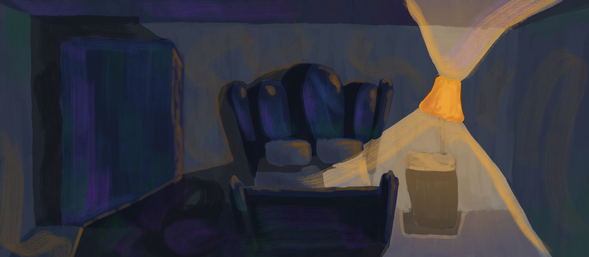
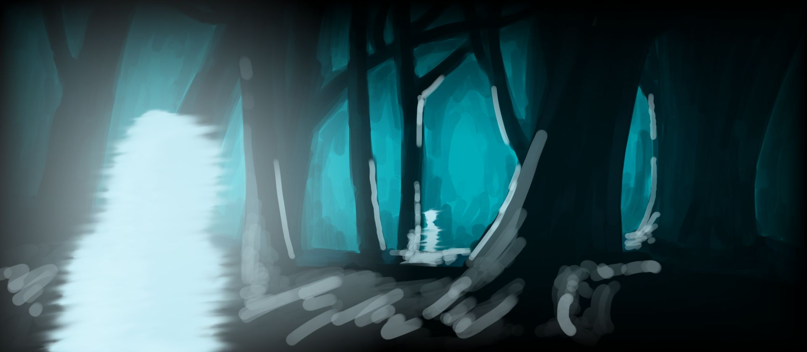

Objective
To create a unique video game that tells a story without the use of words, relying instead on art and music.
A piece of concept art for the game, wherein a portal to the dream world is opening.
Core Gameplay
You play the role of a melancholic man in a blue world struggling with the death of his wife. Ravaged by nightmares, he has trouble distinguishing what is real and fake as memories of his wife distort and fade with time.
The central mechanic in this game is to use little keepsakes and relics from your marriage to transport yourself between the real world and dream world. By interacting with objects in either of these parallel dimensions, you must solve puzzles to move further along and deeper into your memories, hoping to find and heal the source of your sorrows.
Opening Scene
The game opens with a haunting dream remembering the death of your wife. In the dream, she appears without a face, instead having only two gaping holes for eyes and nothing else.
You wake up scared, sad, trying to remember what your wife looked like or smelled like or sounded like, but she's been gone for too long and you can no longer remember. You wish you had not burned all your pictures in a depressed fit a few months back, because now you have nothing. The world is blue and purple, full of sadness.
Pain unbearable, you go looking for a smoke somewhere in your room. Stumbling through your bedside table looking for a box of cigarettes, you find a single picture of your wife that survived your purge, and you are transported into the dream world, a world of red and pink and orange.
This is where the journey begins.
Concept Art - Sketches


Concept sketches for the game.
Status
This game is very much only in its concept stages. I've written a story outline, drawn concept art, and composed some basic music for use in the game, but don't have anything presentably playable yet. After graduating college, I hope put more time into this and work with a small team of maybe 3-4 people to develop the game, just as a passion project.
Two games that have inspired me a lot are Inside for its incredible puzzle-solving gameplay and Gris for its beautiful artstyle. I hope to take my own spin on some of the ideas of those games and combine it with my own artstyle to culminate a wonderful game experience.
Final product
The images above are quick, 15-30 minute sketches. The final product will have more detailed art while retaining a distinctly brush-stroked look, with an appearance something like displayed below: